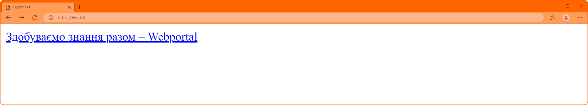

Посилання в Html
Для переходу між веб-сторінками був винайдений головний елемент в Інтернеті – гіперпосилання
Гіперпосилання, або просто посилання — активний (виділений) текст, зображення чи кнопка на веб-сторінці, натиснення на яку (активізація гіперпосилання) викликає перехід на іншу сторінку чи іншу частину поточної сторінки.
Для створення посилань використовується парний тег <a>, так званий якір (anchor), з обов'язковим атрибутом href (Hypertext Reference – гіпертекстове посилання), у який записується URl-адреса (Universal Resource Locator – уніфікована адреса ресурсу) сторінки, на яку і відбуватиметься перехід.
<a href="https://webportal.com.ua"> Здобуваємо знання разом – Webportal </a>
Посилання складається з двох частин – вказівника та адресної частини. Вказівник посилання є фрагментом тексту або зображенням, видимим для користувача. Адресну частину посилання користувачеві не видно, вона є адресом ресурсу, до якого необхідно перейти.
У більшості браузерів текст посилання відображається синім кольором із підкресленням. Коли користувач наводить вказівник миші на гіперпосилання, покажчик перетвориться на кисть руки. Відвідані посилання, як правило, стають фіолетовими.
Посилання можна поділити на 3 типи:
- абсолютні – дозволяють переходити на сторонні ресурси в інтернеті;
- відносні – застосовують при переході між сторінками веб-ресурсу;
- посилання-якір – використовуються для переміщення всередині поточного html документу
Посилання-якір.
Посилання-якір, або внутрішні посилання, зручні у використанні всередині об'ємного документа, вони створюють переходи до різних розділів поточної веб-сторінки.
Алгоритм створення посилання-якоря:
- блоку, до якого ми хочемо здійснити перехід, треба надати унікальний ідентифікатор, за допомоги атрибуту id;
- вказівник посилання, огорнути в тег <a>;
- в адресній частині посилання (в атрибуті href) вказати ідентифікатор блоку (ім'я покажчика). Перед іменем покажчика завжди ставиться знак #.
<a href="#anchor"> Розділ 2 </a>
︙
<h2 id="anchor"> Розділ 2 </h2>
Якщо потрібно зробити посилання з однієї сторінки сайту на певний розділ іншої сторінки, необхідно задати id для цього розділу сторінки, а потім додати його до абсолютної адреси посилання.
<a href="https://webportal.com.ua/html-hyperlinks/#anchor-link"> Посилання-якір </a>Спеціальні посилання.
З деякого часу в посиланнях з'явилися нові можливості – по кліку можна не тільки переходити на інші сторінки і завантажувати файли, але й здійснювати дзвінки на телефони, відправляти повідомлення або дзвонити по скайпу.
Посилання на адресу електронної пошти.
Поштове посилання (mailto) – це спеціальний вид посилання, що допомагає користувачам надсилати повідомлення на поштову скриньку.
При оформленні такого типу посилань, значення атрибуту href має починатися зі слова mailto:, далі вказується адреса електронної скриньки, на яку відвідувач буде надіслати електронні листи.
<a href="mailto: example@gmail.com"> example@gmail.com </a>Посилання на телефонний номер.
З кожним роком можна спостерігати певну тенденцію – частка мобільного трафіку збільшується, і на сьогодні є більшою за десктопну. Тому, розробники специфікацій HTML створити спеціальний формат телефонного посилання (tel), що запускає вбудований додаток для дзвінків та передає в нього відповідний номер телефону.
Щоб встановити посилання на телефонний номер, значення атрибуту href має починатися зі слова tel:, далі номер телефону в міжнародному форматі без пропусків, тире, дужок та іншого. Вказівник посилання можна складати на власний смак.
<a href="tel:+380000000000"> +380 (00) 000 00 00</a>Посилання на месенджер.
Продовжуючи тему мобільного серфінгу в Інтернеті, зауважимо, що в останній час почали з’являтися нові специфікації для посилань, які дозволяють запускати з браузера популярні месенджери або програми для відео-комунікації.
<a href="viber://chat?number=%2B380000000000"> Viber </a>Відкриття посилань.
Здебільшого, посилання для зручності відкриваються у поточному вікні (вкладці), однак, користувач може самостійно налаштувати спосіб відкриття посилань – в поточному або в новому вікні. Для цього до елемента <a> слід додати атрибут target.
Атрибут target може мати наступні значення:
- self – сторінка завантажується у поточне вікно;
- blank – сторінка відкривається у новому вікні браузера.
<a href="https://webportal.com.ua" target="blank"> webportal.com.ua </a>